Panduan Pembangunan Backend Geospasial
Selamat Datang! Panduan ini merupakan bagian kedua dari pembelajaran mengenai pembangunan sebuah fullstack WebGIS sebagai bagian dari mata kuliah Sistem Informasi Geospasial berbasis web di lingkungan Departemen Teknik Geodesi UGM. Materi pada bagian ini akan disampaikan dalam bentuk tutorial praktikum yang disertai dengan sedikit landasan teori.
Panduan Pembangunan Backend GeospasialPersiapan Alat dan BahanAlat dan BahanInstalasi Perangkat LunakApache dan PHP stack (uWamp)Basisdata (PostgreSQL dan Extensi PostGIS)Landasan TeoriFrontend dan Backend DevelopmentArsitektur fullstack WebGIS Frontend developmentBackend DevelopmentReview Basisdata dan Bahasa SQLBasisdata PostgreSQLData Spasial dengan PostGISCRUD pada basisdataHTTP MethodsPHP: Hypertext PreprocessorServer-side scripting dengan PHP Syntax Bahasa PHPMembuat program sederhana dalam bahasa PHPMenjalankan PHP pada WebServerMemahami perbedaan Client-side dan Server-Side ScriptingKoneksi ke BasisdataMengaktifkan koneksi PHP ke BasisdataMenyimpan data pada basisdataMembuat koneksi ke basisdata PostgreSQL melalui PHPMelakukan Query pada basisdata dengan PHPMenangani Data SpasialImport data spasial ke dalam PostGISMemanggil data spasial dari PHPMenampilkan data sebagai GeoJSON pada LeafletJSAddendum: Alternatif Desain BackendAddendum: Menggunakan NodeJS sebagai pengganti PHPPertanyaan dan LatihanRujukan
Persiapan Alat dan Bahan
Alat dan Bahan
Untuk mengikuti praktikum ini, berikut adalah beberapa perangkat lunak yang dibutuhkan:
- Instalasi Basisdata PostgreSQL (versi 10>) dan PostGIS
- uWAMP (Bisa diganti dengan XAMPP atau WAMPServer)
- Text Editor (VSCode disarankan untuk keperluan ini)
- Browser (disarankan menggunakan Chrome atau Firefox)
- (opsional) QGIS untuk berinteraksi dengan data spasial di basisdata PostGIS
- (opsional) VC-Redist, diperlukan untuk instalasi uWAMP pada beberapa versi Windows.
uWAMP merupakan aplikasi untuk melakukan instalasi webserver pada sebuah komputer. uWAMP merupakan sebuah stack perangkat lunak yang terdiri dari Apache (Webserver), MySQL (basisdata) serta PHP (server-side scripting) pada sistem operasi Windows. uWAMP dipilih karena cukup ringan untuk digunakan dengan ukuran instalasi yang kecil, sehingga mudah untuk digunakan dalam praktikum ini. Untuk keperluan production, disarankan menggunakan stack yang lebih mapan, misalnya WAMPServer atau XAMPP.
PostgreSQL dan PostGIS diperlukan untuk demonstrasi bagaimana menghubungkan basisdata pada sisi server dengan client menggunakan bahasa PHP. PostgreSQL dan PostGIS dikenal secara de facto sebagai salah satu basisdata terbaik untuk keperluan penyimpanan data spasial pada server, dan telah digunakan untuk banyak proyek terkait basisdata spasial. Apabila PostgreSQL tidak tersedia, dapat digunakan basisdata MySQL atau SQLite yang akan terinstall sekaligus apabila dilakukan instalasi uWAMP. Meskipun demikian, MySQL tidak memiliki ekstensi untuk menangani data spasial sebaik PostgreSQL, sehingga pada bagian terkait data spasial di server akan sulit untuk dilaksanakan. Oleh karena itu, disarankan untuk melakukan instalasi PostgreSQL berikut ekstensi PostGIS sebelum mengikuti panduan ini lebih jauh.
Instalasi Perangkat Lunak
Apache dan PHP stack (uWamp)
Apache dan PHP merupakan dua perangkat yang masing-masing berdiri sendiri dan dapat diinstall secara terpisah (faktanya, banyak pengaturan webgis pada sisi server yang menggunakan metode ini dalam production, karena dipandang lebih aman). Apache merupakan sebuah web server yang dapat menyajikan halaman dalam format HTML melalui pengaturan server sehingga dapat ditampilkan dan dipanggil oleh client (dalam hal ini browser). Adapun PHP merupakan bahasa pemrograman yang digunakan pada sisi server (server-side scripting) untuk mengolah halaman web sebelum ditampilkan menggunakan browser.
Lakukan instalasi uWAMP dengan menggunakan file instalasi yang tersedia (atau dapat diunduh di website resmi uWAMP). Tidak ada pengaturan khusus yang harus dilakukan pada saat melakukan instalasi uWAMP, tetapi perhatikan folder tujuan instalasi (dalam hal ini digunakan folder default c:/UwAmp). Folder ini akan menjadi tempat webserver lokal (localhost) nantinya akan dijalankan.
LATIHAN 1: Instalasi uWAMP uWAMP memerlukan instalasi Visual Studio C++ yang sesuai dengan versi PHP yang digunakan. Untuk itu sebelum melakukan instalasi uWAMP, terlebih dahulu lakukan instalasi vcredist yang dapat diunduh melalui situs Microsoft.
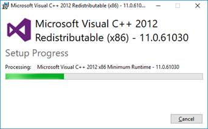
Selanjutnya, instalasi uWAMP dapat dilakukan. uWAMP dapat diunduh melalui situs www.uwamp.com. Pilih lokasi instalasi yang dikehendaki, misalnya c:/uwamp atau lokasi lain yang diinginkan.
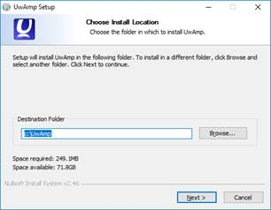
Setelah instalasi selesai, jalankan uwamp.exe pada folder yang dipilih pada saat instalasi:
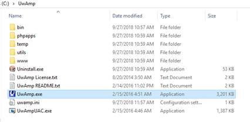
Setelah uwamp dijalankan, periksa jendela yang terbuka:
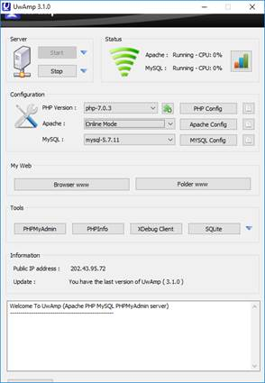
Pada jendela yang terbuka, dapat dilihat status dari Apache dan MySQL. Apabila salah satu komponen masih belum running, jalankan Apache maupun MySQL tersebut melalui menu Start.
Klik pada menu 'Browser WWW' untuk membuka menu localhost pada Jendela Browser:
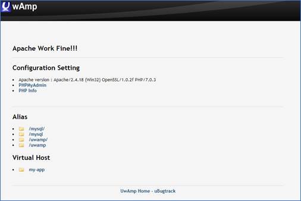
Apabila muncul keterangan “Apache work fine !!!”, maka pengaturan uWAMP telah berhasil dilakukan.
Basisdata (PostgreSQL dan Extensi PostGIS)
PostgreSQL versi terbaru (saat ini versi 12) dapat diunduh dari website resmi PostgreSQL https://www.postgresql.org/download/. Pada saat melakukan instalasi, hal-hal yang perlu dicatat adalah sebagai berikut:
- Port instalasi. Defaultnya menggunakan port 5432 sebagai alamat dari instalasi PostgreSQL. Apabila terdapat beberapa versi PostgreSQL yang berbeda, catat dan ingat nomor port berapa yang akan digunakan sesuai bersi PostgreSQL yang terinstall.
- Username dan Password untuk koneksi basisdata. Username dan Password akan diminta tiap kali pengguna akan melakukan koneksi ke basisdata dan mengambil data yang ada pada basisdata tersebut, sehingga perlu untuk mencatat dan menyimpan password serta username koneksi yang sudah dibuat, atau seluruh data akan terkunci dan tidak dapat lagi diakses. untuk keperluan default, gunakan password: 'postgres' dan username: 'postgres'
PostGIS merupakan ekstensi PostgreSQL yang digunakan untuk menangani data spasial. PostGIS dapat diinstal melalui dua cara: 1) Melalui StackBuilder pada akhir instalasi PostgreSQL, atau 2) Menggunakan instalasi yang tersedia di website PostGIS sesuai dengan versi basisdata PostgreSQL yang digunakan. Setelah terinstall, ekstensi PostGIS dapat diaktifkan pada basisdata yang akan memuat data spasial dengan menggunakan query:
create extension postgis;
Selanjutnya, table pada basisdata tersebut akan memiliki kolom tambahan dengan nama geom, yang berfungsi untuk menyimpan informasi terkait dengan geometry, extent dan sistem proyeksi dari data spasial tersebut.
Landasan Teori
Frontend dan Backend Development
Sebagaimana dijelaskan pada bagian sebelumnya, dalam pembangunan aplikasi berbasis web dikenal dua bagian penting, yaitu Frontend yang berkaitan dengan pembuatan antarmuka website serta Backend yang berhubungan dengan pembangunan server dan basisdata aplikasi. Dalam hal ini, pembagian keahlian seorang developer web juga seringkali diberikan berdasarkan kedua hal tersebut: Frontend Developer memiliki spesifikasi pembangunan antarmuka, desain UI/UX, logika interaksi pengguna, library untuk pemetaan, dan lain sebagainya. Adapun Backend Developer banyak berurusan dengan desain basisdata, struktur server, logika API (Application Programming Interface), dan seterusnya. Desain alur komunikasi antara frontend dan backend juga harus diperhatikan oleh setiap web developer, sehingga hal ini akan dibahas secara khusus pada bagian lain.
Arsitektur fullstack WebGIS
Pengembangan aplikasi Frontend dan Backend web secara bersama-sama seringkali disebut sebagai Fullstack Development, yang berarti pembuatan website dari sisi yang berhadapan langsung dengan pengguna (frontend) maupun logika penyimpanan dan pengolahan data pada server (backend). Seorang fullstack developer harus mampu membuat sebuah website yang fungsional dan memenuhi kebutuhan client maupun server.

Pada gambar di atas, pengguna berinteraksi dengan bagian Frontend dari sebuah arsitektur web (GIS). Frontend berkomunikasi dengan Backend (server) menggunakan protokol HTTP (request dan response). Backend digunakan untuk berinteraksi dengan file yang tersimpan pada basisdata maupun sistem operasi server dengan menggunakan bahasa pemrograman di sisi server (server-side scripting).
Selain arsitektur Frontend-Backend, terdapat juga model pengembangan aplikasi web lain yang berkembang saat ini, seperti Monolith, SOA, Microservices dan Serverless. Pembahasan mengenai model-model arsitektur web ini tidak akan dibahas secara detil pada tutorial ini.
Frontend development
Aplikasi pada sisi frontend dibangun dengan menggunakan library dan bahasa pemrograman client-side scripting, misalnya HTML, CSS dan Javascript. Bagian frontend didesain sesuai dengan jenis client yang akan menggunakan aplikasi tersebut, misalnya pada browser, mobile maupun responsive (misalnya dengan menggunakan framework Bootstrap).
Dalam lingkup pemrograman WebGIS, pada sisi client menggunakan library yang digunakan untuk memanggil basemap (tilelayer) maupun data (feature) yang tersimpan pada basisdata di server. Contoh library web mapping ini adalah LeafletJS, OpenLayers, MapboxJS, dan ArcGIS JS. Library ini diantaranya berfungsi untuk mengatur interaksi dengan pengguna ('klik untuk memunculkan popup') serta memastikan berbagai data spasial pada peta dapat ditampilkan sesuai dengan extent maupun sistem proyeksinya meskipun berasal dari basisdata yang beragam.
Backend Development
Backend merupakan fokus dari bagian tutorial ini. Backend dibangun dengan menggunakan bahasa pemrograman di server (server-side scripting) yang berbeda dengan bahasa pemrograman di sisi client (client-side scripting). Perbedaannya diantaranya terletak pada fungsi utamanya: Server-side scripting digunakan untuk berhubungan dengan basisdata, mengatur rute website dan menyediakan data yang dipanggil oleh client, sedangkan Client-side scripting digunakan untuk mengatur antarmuka, interaksi pengguna serta berkomunikasi dengan server melalui server-side scripting. Server-side scripting juga dapat berfungsi untuk memproses terlebih dahulu halaman web yang dipanggil oleh client sebelum ditampilkan pada browser (HTML Preprocessing). Hal ini bertujuan untuk menghasilkan tampilan yang dinamis dan aman, misalnya untuk menampilkan halaman tertentu yang hanya dapat dibuka setelah pengguna memasukkan password (password tentunya tidak dapat disimpan pada sisi client).
Server dalam hal ini mengacu pada mesin maupun sistem operasi yang bertugas untuk menyiapkan data pada saat dipanggil oleh client. Sebuah aplikasi web server (misalnya Apache) bertugas untuk mendistribusikan permintaan (request) dari client dan menyajikan halaman web yang diminta. Aplikasi yang dibangun dengan menggunakan server-side scripting (misalnya PHP, Node JS, ASP Net, C++ dan lain sebagainya) mengatur akses data yang diminta oleh client tersebut. Panduan ini lebih jauh akan membahas mengenai bagaimana PHP digunakan untuk mengatur akses terhadap data pada basisdata serta 'memasak' halaman web sebelum disajikan ke client.
Review Basisdata dan Bahasa SQL
Basisdata merupakan salah satu komponen penting dalam sebuah backend. Basisdata menunjang penyimpanan data dalam jumlah besar sekaligus memungkinkan data untuk disimpan secara terstruktur sehingga memudahkan pencarian dan pemanggilan data. Pada sebuah sistem informasi geospasial, basisdata juga memungkinkan pengguna untuk melakukan analisis spasial melalui query. Pertanyaan terhadap basisdata dalam bentuk query dapat dijawab dengan menggunakan bahasa yang didesain untuk berinteraksi dengan basisdata, misalnya bahasa SQL.
Basisdata dapat dibagi menjadi dua macam: 1) Basisdata SQL dan 2) Basisdata NoSQL. Basisdata SQL, misalnya relasional, merupakan jenis basisdata yang banyak digunakan untuk berbagai keperluan termasuk dalam menyajikan sistem informasi berbasis web. Beberapa contoh basisdata yang menggunakan konsep relational-SQL antara lain adalah MySQL, PostgreSQL dan MsSQL. Adapun jenis basisdata NoSQL (Not Only SQL) mulai banyak digunakan seiring dengan perkembangan teknologi informasi dan big data, dimana model basisdata relational dianggap tidak lagi mencukupi berbagai model data yang kompleks dan tidak terstruktur. Basisdata NoSQL dapat dibagi lagi menjadi Document-based, Key-Value, Graph dan Column. Basisdata NoSQL dominan digunakan untuk aplikasi yang menuntut tingkat operasi (misalnya pemrosesan parallel) dan kecepatan yang tinggi, seperti pada aplikasi mobile dan big data. Contoh basisdata NoSQL antara lain MongoDB, CouchDB, Neo4j, Cassandra dan lain sebagainya.
Basisdata PostgreSQL
PostgreSQL merupakan salah satu basisdata yang paling banyak digunakan dalam pembangunan sistem informasi geospasial berbasis web. Salah satu alasannya adalah adanya extensi PostGIS yang memudahkan geometry data spasial disimpan dan diindeks pada basisdata untuk memudahkan pencarian dan analisis spasial menggunakan bahasa Query SQL.
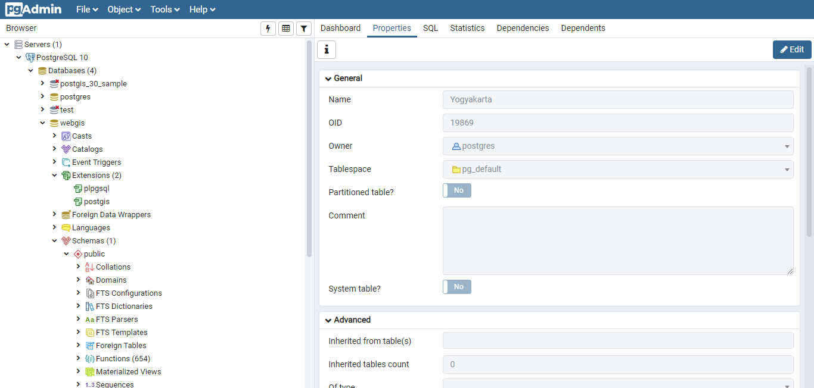
PostgreSQL dilengkapi dengan antarmuka dalam bentuk CLI (psql) maupun GUI (pgAdmin4). Antarmuka yang disediakan ini dapat digunakan untuk melakukan manajemen tabel pada basisdata PostgreSQL, termasuk membuat pertanyaan dalam bentuk query yang disediakan pada Query Window.
Data Spasial dengan PostGIS
PostgreSQL sendiri merupakan aplikasi DBMS (DataBase Management System) yang bersifat general purpose, yang artinya dapat digunakan untuk berbagai keperluan secara umum. Kemampuan PostgreSQL dapat diperluas untuk menangani keperluan khusus dengan menggunakan aplikasi tambahan atau ekstensi. Untuk itu, agar dapat menyimpan data spasial PostgreSQL memerlukan salah satu ekstensi atau tambahan pada program utamanya dalam bentuk PostGIS.
PostGIS merupakan ekstensi pada PostgreSQL yang digunakan untuk menyimpan, memanipulasi dan menampilkan data spasial pada tabel relasional yang disediakan oleh PostgreSQL. Tiap tabel mewakili satu fitur spasial yang masing-msaing terdiri dari data dalam bentuk atribut (attribute table) dan geometri spasial (extent, sistem proyeksi, topologi, dan seterusnya). Pada sebuah tabel PostGIS, geometry disimpan tersendiri dalam kolom dengan tipe geometry.
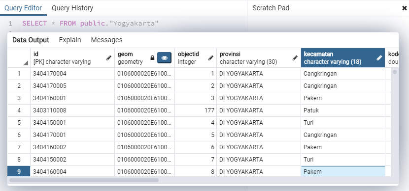
Pada panduan ini tidak akan dibahas secara detil mengenai cara memasukkan data dan melakukan query pada basisdata PostGIS. Ikuti tutorial ini untuk melakukan manajemen data spasial pada PostGIS dengan menggunakan QGIS sebagai antarmuka basisdata, termasuk bagaimana memasukkan data dalam bentuk shapefile ke dalam basisdata PostgreSQL-PostGIS.
CRUD pada basisdata
Berdasarkan jenisnya, operasi SQL pada basisdata dapat dibagi menjadi 3 macam, yaitu DDL (Data Definition Language) yang berisi perintah-perintah pendefinisian struktur atau skema basisdata, DML (Data Manipulation Language) yang digunakan untuk pengolahan data pada tabel, DCL (Data Control Language) yang digunakan dalam pemberian hak akses serta TCL (Transaction Commit Language) yang berkaitan dengan database transaction.
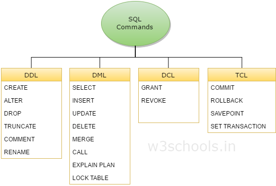
Dari keempat jenis query SQL tersebut, DML adalah perintah-perintah yang banyak digunakan terkait dengan manipulasi basisdata oleh server-side scripting. Dalam pemrograman web, perintah untuk manipulasi basisdata seringkali disebut dengan istilah CRUD (Create, Read, Update, Delete):
Create - Merupakan ekivalensi untuk perintah INSERT pada basisdata. Apabila sebuah operasi request dari client didefinisikan sebagai perintah Create, maka server-side scripting akan memerintahkan basisdata untuk menambahkan data baru pada sebuah tabel yang sudah ada di basisdata
Read - Digunakan untuk membaca data yang tersimpan pada basisdata. Perintah ini diterjemahkan dalam bahasa SQL menjadi query SELECT.
Update - Merupakan perintah untuk memperbarui baris tertentu pada tabel di basisdata.
Delete - Digunakan untuk menghapus baris tertentu pada sebuah tabel di basisdata.
Contoh operasi yang dilakukan untuk CRUD adalah sebagai berikut:
Sebuah sistem informasi webGIS untuk pemetaan Penyakit Covid-19 menyimpan seluruh data pasien Covid-19 dalam sebuah basisdata. Antarmuka yang disediakan memungkinkan pengguna website untuk:
- Memanggil data berupa semua pasien covid dengan status Positif --> Operasi Read (SELECT)
- Menambahkan data pasien baru tiap hari --> Operasi Create (INSERT)
- Menghapus nama pasien ODP yang berstatus Negatif dari daftar --> Operasi Delete
- Merubah status pasien PDP menjadi Positif --> Operasi Update
Semua operasi tersebut dilakukan oleh pengguna dari antarmuka website (client), yang kemudian mengirimkan permintaan (request) kepada server sesuai dengan interaksi yang disediakan oleh client-side scripting pada website tersebut. Selanjutnya, permintaan tersebut diterima oleh server-side scripting yang kemudian menerjemahkannya menjadi perintah Query dalam bahasa SQL pada basisdata. Terakhir, server akan mengirimkan response pada client berupa hasil query dalam bentuk halaman web yang telah diproses sebelumnya (preprocessed HTML). Untuk itu, selanjutnya akan dibahas lebih detil mengenai bahasa PHP sebagai salah satu bahasa server-side scripting.
HTTP Methods
Client dan server menggunakan protokol tertentu untuk berkomunikasi dalam menjalankan operasi CRUD di atas. Beberapa protokol didesain untuk memudahkan komunikasi antara client dan server dalam menjalankan operasi CRUD di atas. Contoh protokol HTTP yang digunakan dalam operasi CRUD adalah sebagai berikut:

Pada sisi client, permintaan (request) ini dilakukan dengan menggunakan perintah tertentu sesuai dengan library atau framework yang digunakan. Salah satu yang sering digunakan adalah operasi Javascript fetch. Syntax dari operasi ini adalah sebagai berikut:
var url = 'https://jsonplaceholder.typicode.com/posts'var Data = { name: "myname", id: 31231}// memanggil data dengan fetch pada protokol GETfetch(url) .then(data => {console.log(data)}) .then(response=> {console.log(response)}) .catch(error=> console.log(error))// mengirim data dengan fetch pada protokol POSTfetch(url, { body: Data, method: "POST" }).then(data => {console.log(data)}) .then(response=> {console.log(response)}) .catch(error=> console.log(error))Selain menggunakan fetch, pembuatan request dari client ke server juga dapat menggunakan library pihak ketiga, seperti JQuery atau Axios.
PHP: Hypertext Preprocessor
Ingat kembali pelajaran mengenai konsep penyajian halaman sebuah web: halaman yang ditampilkan pada browser merupakan hasil dari komunikasi antara client dan server. Pada pelajaran sebelumnya, Javascript merupakan bahasa pemrograman client-side scripting yang dijalankan pada browser. Javascript dapat digunakan untuk menangani berbagai operasi pada browser, seperti event yang terjadi ketika tombol mouse ditekan, pengolahan iterasi, dan seterusnya. Pada halaman web yang lebih kompleks, penggunaan client-side scripting saja tidak akan memadai, sehingga dibutuhkan pemrograman yang dilakukan pada sisi server untuk mengolah data sebelum ditampilkan pada halaman web. PHP merupakan salah satu bahasa pemrograman seperti ini.
Server-side scripting dengan PHP
PHP dapat digunakan sebagaimana Bahasa pemrograman lainnya, yaitu untuk mengolah data, memanggil file, melakukan hitungan, dan lain sebagainya. Pada sebuah web server, PHP seringkali digunakan untuk melakukan koneksi ke basisdata dan mengolah data yang diperoleh tersebut. Salah satu penggunaan PHP adalah untuk melakukan validasi form dan mengolah data dari form tersebut untuk melakukan query pada basisdata, misalnya untuk memasukkan password.
Syntax Bahasa PHP
Apabila bahasa Javascript pada sebuah dokumen HTML diwakili oleh tag <script> </script>, maka bahasa PHP dibuka dan ditutup dengan pernyataan <?php dan ?>. Demikian pula, jika bahasa Javascript pada sisi client dapat disimpan dalam file tersendiri dengan extensi *.js, maka file PHP juga dapat disimpan dalam extensi *.php. Contoh sytax bahasa PHP adalah sebagai berikut:
$txt1 = "Hello, PHP";echo "PHP dapat digunakan untuk mencetak " . $txt2 . "<br>";Adapun contoh bahasa PHP yang digunakan pada sebuah dokumen HTML adalah seperti berikut:
<html><body>echo "My first PHP script!";</body></html>Karena PHP hanya dapat diterjemahkan oleh sebuah aplikasi webserver, baik file dengan ekstensi *.php maupun HTML yang berisi kode PHP tidak dapat dijalankan oleh sebuah browser biasa, tetapi harus diletakkan pada folder yang dikenali oleh webserver seperti Apache, misalnya.
Rujukan lengkap untuk syntax bahasa PHP dapat dibuka di sini.
Membuat program sederhana dalam bahasa PHP
PHP merupakan sebuah aplikasi tersendiri yang dapat diinstall pada perangkat lunak server (webserver), misalnya Apache. Dalam prakteknya, penggunaan PHP pada server seringkali dilakukan bersamaan dengan instalasi system operasi, aplikasi webserver serta basisdata. Paket aplikasi (stack) ini seringkali disebut dengan nama LAMP, yang merupakan singkatan dari komponen penyusunnya, yaitu Linux, Apache, MySQL dan PHP. Beberapa aplikasi lain misalnya WAMP server (Windows, Apache, MySQL/MariaDB dan PHP) serta XAMPP (X-cross platform, Apache, MySQL/MariaDB, PHP dan Perl).
Menjalankan PHP pada WebServer
Sebagai sebuah bahasa server-side scripting, PHP hanya dapat dipanggil oleh sebuah Aplikasi WebServer. Pada bagian ini kita akan menggunakan uWAMP, yaitu versi WAMPServer yang telah dimodifikasi untuk dapat digunakan secara portable. uWAMP telah memiliki aplikasi webserver di dalamnya, yaitu Apache. Untuk itu, latihan berikut akan menggunakan folder yang berada pada folder instalasi uwamp untuk memudahkan pada saat menjalankan aplikasi.
LATIHAN 2: Membuat script PHP Sederhana
Pada bagian ini dan seterusnya, folder instalasi yaitu c:/uwamp akan menjadi folder tempat bekerja. Alamat c:/uwamp/www disebut sebagai ROOT folder yang menjadi lokasi pemanggilan localhost pada browser.
Untuk keperluan praktek, buat sebuah folder dengan nama 'aplikasiku' di dalam folder ROOT (c:/uwamp/www), kemudian isi dengan file index.php sebagai berikut:
<?php$txt1 = "Belajar PHP";$txt2 = "tag HTML";$x = 5;$y = 4;echo "<h2>" . $txt1 . "</h2>";echo "PHP dapat digunakan untuk mencetak " . $txt2 . "<br>";echo $x + $y;?>Buka browser pada alamat localhost/aplikasiku. Tampilan pada browser semestinya adalah sebagai berikut:
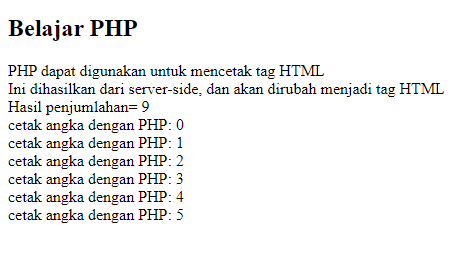
Selanjutnya, lakukan modifikasi script di atas (file index.php) menjadi seperti berikut:
<html><head><title>Halaman PHP</title><style></style></head><body><p id="teks"></p><script>document.getElementById(teks).innerHTML = "ini dihasilkan dari client-side"</script>$txt1 = "Belajar PHP";$txt2 = "tag HTML";$x = 5;$y = 4;echo "<h2>" . $txt1 . "</h2>";echo "PHP dapat digunakan untuk mencetak " . $txt2 . "<br>";echo "Ini dihasilkan dari server-side, dan akan dirubah menjadi tag HTML";echo $x + $y;function ulangi() {for ($n = 0; $n <= 10; $n++) {echo "cetak angka dengan PHP: $n <br>";}}echo "<br>";ulangi(); // memanggil fungsi ulangi</body></html>Pada script di atas, PHP digunakan sebagai bagian dari dokumen HTML. Pada dokumen seperti ini, keseluruhan dokumen akan diproses pada client kecuali bagian dengan tag PHP yang secara khusus akan diproses oleh server, dalam hal ini PHP pada Apache localhost. Penggunaan function dan iterasi for menunjukkan bahwa bahasa pemrograman PHP dapat digunakan untuk mengolah data pada sisi server, sama halnya dengan Javascript yang digunakan pada sisi client.
Diantara bentuk kegunaan PHP adalah untuk menangani data yang dikirim oleh client dalam bentuk formulir. Sebagai contoh, pada bagian antarmuka dibuat sebuah form untuk menerima masukan pengguna. Oleh PHP, data dari hasil masukan tadi disimpan dalam sebuah variabel, kemudian ditampilkan pada HTML yang terlebih dulu dimasak oleh PHP. Dalam hal ini, PHP juga dapat digunakan untuk menyimpan data tersebut pada sebuah basisdata. Untuk lebih jelasnya kerjakan latihan berikut:
LATIHAN 3: Menangani Form dengan PHP
Sebagaimana disebutkan sebelumnya, PHP dapat digunakan untuk memproses data dari Form yang dikirim oleh pengguna (client). Hal ini dapat digunakan misalnya untuk memasukkan nama dan password dari pengguna. Dengan menggunakan pemrograman PHP, data dari form tersebut dapat digunakan untuk membangun query yang digunakan pada pencarian basisdata, atau memanggil berkas tertentu berdasarkan kriteria yang dimasukkan.
Untuk praktek berikut, akan dibuat dua buah file, masing-masing berfungsi sebagai client dan server. Buat file pertama dengan nama form.html sebagai berikut:
<html><head><title>Form HTML untuk PHP</title><style></style></head><body><form action="welcome.php" method="post">Nama: <input type="text" name="name"><br>Email: <input type="text" name="email"><br><input type="submit"></form></body></html>Buka file di atas pada browser dengan alamat localhost/aplikasiku/form.html. Tampilan yang muncul adalah sebagai berikut:
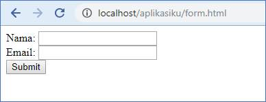
Selanjutnya, buat file welcome.php untuk menangani masukan dari form tersebut:
<html><body>//menyimpan form pada variabel$nama = $_POST["name"];$email = $_POST["email"];echo "<br>";echo "<h1>Selamat datang</h1>";echo "<p>Berdasarkan input, nama anda adalah: ", $nama, "</p>";echo "<p>dan email anda adalah: ", $email, "</p>";</body></html>
Perhatikan alur komunikasi data pada kedua file di atas. Pada file form.html, masukan dari pengguna diambil dari form yang kemudian dikirim dengan menggunakan tombol submit ke dalam file welcome.php. Pada file PHP yang berada pada server tersebut, data dari form disimpan dalam dua buah variable, masing-masing dengan nama $nama dan $email, untuk kemudian diproses (‘preprocess’) menjadi HTML dan dikirim kembali ke client melalui welcome.php.
Bagian penting dari form di atas adalah metode HTTP Request yang digunakan, yaitu POST (lihat file form.html dan welcome.php tersebut). Terdapat beberapa metode untuk request data ke server, dimana POST adalah salah satu metode yang banyak digunakan. Penjelasan mengenai metode-metode HTTP ini telah diberikan di bagian lain dokumen ini.
Memahami perbedaan Client-side dan Server-Side Scripting
Sebagai sebuah preprocessor HTML, PHP hanya dapat me'masak' HTML apabila dijalankan pada browser. Untuk melihat perbedaan antara Javascript dan PHP, jalankan script index.php di atas, kemudian buka localhost untuk melihat hasil tampilan. Selanjutnya, buka kode program (View Source atau CTRL+U) dan perhatikan kode yang tertulis. Hasilnya adalah sebagai berikut:
<html><head> <title>Halaman PHP</title></head><body> <p id="teks"> </p> <script> document.getElementById(teks).innerHTML = "ini dihasilkan dari client-side" </script><h2>Belajar PHP</h2>PHP dapat digunakan untuk mencetak tag HTML <br> Ini dihasilkan dari server-side, dan akan dirubah menjadi tag HTML<br>Hasil penjumlahan= 9<br>cetak angka dengan PHP: 0 <br>cetak angka dengan PHP: 1 <br>cetak angka dengan PHP: 2 <br>cetak angka dengan PHP: 3 <br>cetak angka dengan PHP: 4 <br>cetak angka dengan PHP: 5 <br></body></html>Pada script kode sumber halaman Index.php di atas dapat dilihat bahwa script dalam bahasa Javascript tetap dapat dilihat dalam bentuk aslinya, sedangkan baris-baris yang dibuat dalam bahasa PHP hilang dan hanya dapat dilihat HTML yang dihasilkan (dalam bentuk tag HTML). Hal ini karena bahasa PHP 'memasak' terlebih dahulu bahasa HTML yang akan ditampilkan oleh client sehingga bahasa aslinya tidak lagi muncul pada klien.
Pada bagian ini telah dipelajari bagaimana mengatur sebuah server dengan stack aplikasi WAMP (Windows, Apache, MySQL dan PHP) serta bagaimana menggunakan PHP untuk memproses data pada sisi server secara sederhana. Bagian selanjutnya akan membahas lebih dalam mengenai kegunaan PHP untuk menangani basisdata.
Koneksi ke Basisdata
Pada bagian sebelumnya, kita sudah menggunakan komponen Apache dan PHP dari stack WAMP. Selanjutnya pada bagian ini akan dipelajari mengenai bagaimana menggunakan PHP untuk berhubungan dengan komponen basisdata, yaitu PostgreSQL. Basisdata merupakan komponen penting pada sebuah aplikasi server, sebab dalam prakteknya, sebuah halaman Web maupun WebGIS seringkali hanyalah antarmuka untuk menampilkan dan mengakses data yang berjumlah besar yang biasanya disimpan pada basisdata. Dengan kombinasi Javscript, PHP dan basisdata, sebuah aplikasi web dapat digunakan untuk mengakses dan menampilkan konten yang bervariasi, misalnya apabila WebGIS yang dibangun mencakup daerah yang luas dengan ukuran data yang sangat besar. Dengan memanfaatkan query basisdata, maka data yang ditampilkan dapat dipilih sehingga web yang dibuat tidak perlu memuat semua data tersebut sekaligus, yang berakibat pada penurunan performa website tersebut.
Mengaktifkan koneksi PHP ke Basisdata
Koneksi PHP ke basisdata dapat dilakukan dengan dua cara:
- Menggunakan fungsi native
pg_connect - Menggunakan PDO
Fungsi native merupakan fungsi bawaan pada PHP yang dapat dipanggil menggunakan perintah pg_connect. Adapun PDO (PHP Data Object) merupakan ekstensi untuk bahasa PHP agar dapat terhubung dengan berbagai basisdata, seperti PostgreSQL, MSSQL, SQLite, dan banyak lainnya. Agar dapat digunakan, baik fungsi native maupun PDO dapat diaktifkan melalui webserver yang memungkinkan akses pada basisdata PostgreSQL oleh PHP. Dalam hal ini, cara mengaktifkan ekstensi PHP berbeda-beda tergantung pada aplikasi webserver apa yang digunakan.
LATIHAN 4: Mengaktifkan fungsi native dan PDO
Untuk mengaktifkan fungsi koneksi basisdata PostgreSQL pada PHP, perlu diaktifkan ekstensi pg_psql dan pg_pdo_psql. Pada uWAMP, berikut adalah cara untuk mengaktifkannya:
Buka uWAMP sebagai administrator (Run as administrator). Kemudian pastikan server Apache sudah menyala (Status: Running).
Klik pada tombol PHP Config di bagian kanan
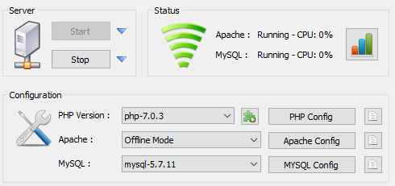
Aktifkan centang untuk php_pdo_pgsql dan php_pgsql:
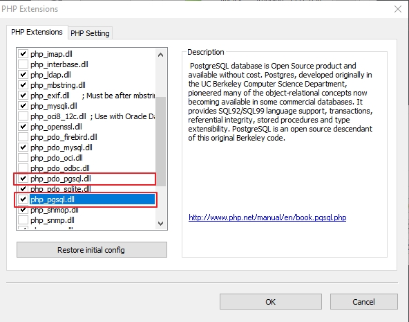
Restart Apache bila diperlukan (Stop, kemudian Start ulang)
Setelah ekstensi tersebut diaktifkan, barulah koneksi bisa dilakukan
Menyimpan data pada basisdata
Untuk latihan, terlebih dahulu perlu dibuat sebuah basisdata pada PostgreSQL yang akan dipanggil oleh PHP.
LATIHAN 5: Membuat basisdata pada PostgreSQL
Buat sebuah basisdata baru dengan nama 'superhero' (CREATE DATABASE) dengan menggunakan pgAdmin4. Untuk saat ini, gunakan postgres sebagai pemilik (owber) basisdata. Nantinya ketika akan dibuat sebuah aplikasi web untuk production, perlu dibuat user tersendiri dengan hak akses yang berbeda.
Setelah basisdata tersebut selesai dibuat, gunakan query tool untuk mengisi basisdata dengan tabel listhero:
CREATE TABLE listhero (id INT NOT NULL,nama VARCHAR(30),ciri VARCHAR(30),afiliasi VARCHAR(40),primary key (id));INSERT INTO listhero(id, nama, ciri, afiliasi)VALUES(1, 'Superman', 'Jubah', 'Justice League'),(2, 'Batman', 'Kelelawar', 'Justice League'),(3, 'Wiro Sableng', 'Kapak 212', 'X-Force'),(4, 'Iron Man', 'Baju besi', 'Avenger');Pastikan tampilan tabel listhero berisi sebagai berikut:
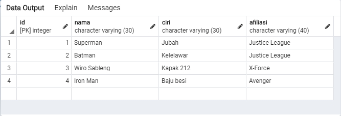
Membuat koneksi ke basisdata PostgreSQL melalui PHP
LATIHAN 6: Koneksi ke Basisdata
Buat script berikut di folder Aplikasiku, simpan sebagai file dengan nama koneksi.php:
$connection = pg_connect("host=localhost dbname=superhero user=postgres password=postgres");if($connection) {echo 'connected';} else {echo 'there has been an error connecting';}(sesuaikan parameter koneksi dengan konfigurasi basisdata yang dibuat)
Jalankan file tersebut pada server (localhost/aplikasiku/koneksi). Apabila muncul tulisan 'connected', artinya koneksi telah sukses dilakukan
Melakukan Query pada basisdata dengan PHP
Sebelumnya telah disebutkan bahwa PHP dapat digunakan untuk mengontrol operasi yang terjadi pada basisdata PostgreSQL. Diantara operasi yang dapat dilakukan adalah melakukan pemanggilan data pada basisdata. Dengan menggunakan PHP untuk memanggil data, pengguna dapat melakukan interaksi pada basisdata melalui client. Sebagai contoh, pengguna dapat memasukkan kriteria tertentu untuk menampilkan hanya sebagian data yang diinginkan dengan query SQL SELECT.
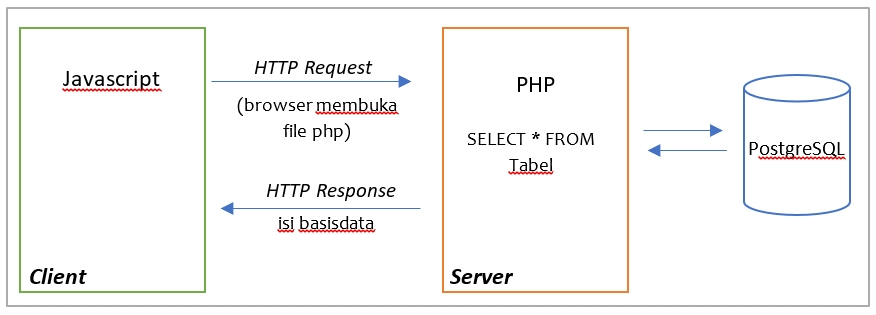
LATIHAN 7: Membuat query ke basisdata
Buat file baru dengan nama query.php, kemudian simpan pada folder aplikasiku dan jalankan pada browser:
$conn = pg_connect("host=localhost dbname=superhero user=postgres password=postgres");if($conn) {echo 'koneksi berhasil';} else {echo 'there has been an error connecting';}// Query SQL$sql = 'SELECT id, nama, ciri, afiliasi FROM listhero';// menyimpan hasil ke variabel $result$result = pg_query($sql);// menampilkan header tabel dari nama kolom di PHP$i = 0;echo '<html><body><table><tr>';while ($i < pg_num_fields($result)){$fieldName = pg_field_name($result, $i);echo '<td>' . $fieldName . '</td>';$i = $i + 1;}echo '</tr>';$i = 0;// menampilkan tiap baris hasil querywhile ($row = pg_fetch_row($result)){echo '<tr>';$count = count($row);$y = 0;while ($y < $count){$c_row = current($row);echo '<td>' . $c_row . '</td>';next($row);$y = $y + 1;}echo '</tr>';$i = $i + 1;}// membersihkan variabel result untuk digunakan lagipg_free_result($result);// menutup koneksipg_close($conn);Pada script di atas, script sql disimpan dalam variable $sql, kemudian digunakan untuk memanggil query pada basisdata yang sudah terkoneksi. Hasil dari query kemudian disimpan dalam variable $result, dimana tiap baris keluaran dipanggil dengan menggunakan fungsi pg_fetch_row(). Preprocessing kemudian dilakukan pada hasil tersebut sehingga menghasilkan tampilan seperti pada gambar:
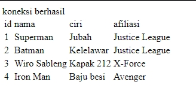
Pada bagian awal latihan ini, kita telah membuat form yang digunakan untuk memproses data pada PHP. Selanjutnya, pada bab sebelum ini juga kita membuat koneksi PHP dengan basisdata PostgreSQL dan menampilkannya pada browser (client). Pada bagian ini kita akan membuat sebuah form untuk mengatur data yang nantinya akan diproses oleh PHP, sebagaimana pada gambar berikut:
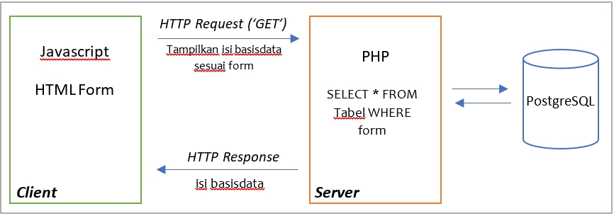
LATIHAN 8: Menghubungkan antarmuka dan query basisdata
Modifikasi file form.html menjadi sebagai berikut:
<html><head><title>Form HTML untuk PHP</title><style></style></head><body><form action="query.php" method="post"><p>Masukkan nama superhero</p>Nama superhero: <input type="text" name="superhero"><br><input type="submit"></form></body></html>Perhatikan bagaimana atribut "name" digunakan sebagai identitas tiap baris formulir tersebut, dan action memanggil file php yang akan menangani metode HTTP POST yang dikirimkan oleh formulir ini.
Selanjutnya buat file baru dengan nama query.php seperti berikut:
$conn = pg_connect("host=localhostdbname=superherouser=postgrespassword=postgres");if($conn) {echo 'koneksi berhasil';} else {echo 'there has been an error connecting';}echo "<br>";// membaca masukan superhero$nama = $_POST["superhero"];echo "Anda mencari pahlawan dengan nama=" . $nama . "<br>";echo "hasilnya adalah sebagai berikut: <br>";// Query SQL$sql = "SELECT id, nama, ciri, afiliasi FROM listhero WHERE nama='". $nama ."'";// menyimpan hasil ke variabel $result$result = pg_query($sql);// menampilkan hasil query menggunakan pg_fetch_assocwhile($row = pg_fetch_assoc($result)) {echo "id: " . $row["id"]. " - Nama: " . $row["nama"]. "-" . $row["ciri"]."-". $row["afiliasi"]. "<br>";}// membersihkan variabel result untuk digunakan lagipg_free_result($result);// menutup koneksipg_close($conn);Jalankan file form.php pada browser. Maka apabila pada form.html diisi dengan nama ‘Superman’ seperti berikut:
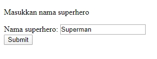
Hasilnya adalah:
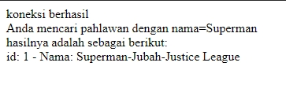
Latihan di atas mendemonstrasikan bagaimana antarmuka yang dibuat pada halaman HTML dapat digunakan untuk mengakses basisdata PostgreSQL dengan menggunakan PHP pada server. Dengan mengkombinasikan berbagai komponen antarmuka HTML dan Javascript serta PHP dan basisdata, maka sebuah aplikasi WebGIS yang dibangun akan dapat memiliki antarmuka yang interaktif dan dinamis.
Pada script query.php di atas, pemanggilan data dari query basisdata dilakukan dengan menggunakan pg_fetch_assoc. Terdapat metode lain untuk memanggil hasil query. Beberapa contohnya disediakan di sini.
Perlu dicatat bahwa metode di atas belum menggunakan AJAX untuk komunikasi client dan server. Semestinya halaman form.php tidak perlu menampilkan hasil query pada halaman lain (dalam hal ini query.php) untuk menampilkan data yang dipanggil dari basisdata. Pembahasan mengenai AJAX tidak dicantumkan pada bagian ini.
Menangani Data Spasial
Pembahasan mengenai bagaimana memanggil data spasial pada basisdata PostGIS melalui PHP tidak akan dibahas secara detil pada panduan ini. Menghubungkan PostGIS ke LeafletJS memuat tutorial tentang bagaimana data spasial dapat dipanggil dengan menggunakan PHP. Gunakan tutorial tersebut sebagai bahan latihan untuk memanggil data dari basisdata ke peta LeafletJS.
Import data spasial ke dalam PostGIS
Memanggil data spasial dari PHP
Menampilkan data sebagai GeoJSON pada LeafletJS
Addendum: Alternatif Desain Backend
::TBD
Addendum: Menggunakan NodeJS sebagai pengganti PHP
::TBD
Pertanyaan dan Latihan
Mengapa diperlukan basisdata untuk menyajikan data spasial sedangkan cukup dengan GeoJSON saja kita bisa menyajikan data spasial dalam bentuk peta (lihat pelajaran yang lalu mengenai LeafletJS dan GeoJSON)?
Bagaimana konsep AJAX diterapkan pada penggunaan PHP dan basisdata PostgreSQL?
PHP disebut sebagai bahasa untuk melakukan preprocessing dokumen HTML. Jelaskan maksud dari pernyataan in
Lakukan evaluasi terhadap peta pada website berikut: https://covid19.sulselprov.go.id/
a. Library apa yang digunakan untuk menampilkan peta pada website tersebut?
b. Evaluasi script penyusun website tersebut. Apakah web tersebut menggunakan pendekatan berbasis client untuk menampilkan data?
c. Dengan semakin banyaknya informasi yang dimunculkan, apakah pendekatan tersebut ideal? berikan saran perbaikan untuk pembangunan webgis yang lebih baik
Rujukan
Fundamentals of Web Application Architecture
A Beginner's Guide to Backend Development
Menghubungkan PostGIS ke LeafletJS
Koneksi Basisdata PostgreSQL dengan NodeJS